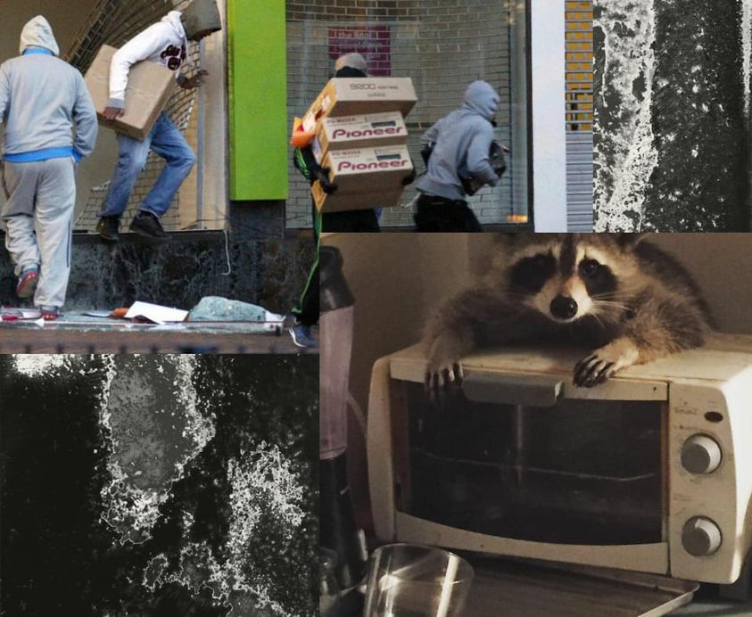

Mobile uploads
There are real similarities between humans and raccoons. We can quickly adapt to any environment. We learn quickly. And we are natural born thieves.
There's a reason stealing is on the 10 Commandments and not countless other antisocial behaviors.
Looting happens every single time there is the slightest breakdown in societal structure.
I suspect stealing is one way we learned how to survive in the wilderness. It was easier to steal food from a lion or pack of dogs than to actually run down the food. We got so good at it, we made an agreement with the dogs that we'd take care of them if we worked together. They took the deal.